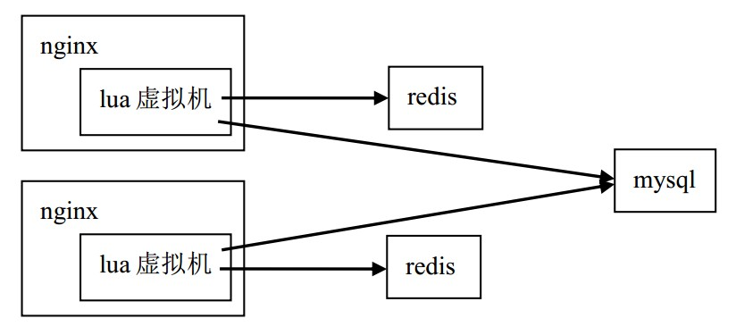

工作3年了，也算到了一个阶段，想回顾下之前做过的，接触过的一些东西。主要聊下技术，也穿插一些故事。 我喜欢为自己写些东西，让自己的思考得到沉淀。
我做的第一个项目叫网易游戏推广员系统（http://gs.163.com，下面简称GS），也是一个历史比较长的项目，它主要负责给公司游戏产品做人对人的推广。 也是多亏产品的给力，项目到今天还是运营的不错。 这个项目对于我的意义，在于培养我的基础，让我熟悉web开发的各种工具，训练解决问题的思路，实际上我并不喜欢搞这个业务。
大概2011年底，我们的需求方想做一个叫网站联盟的项目（http://union.163.com，下面简称网盟），我从GS调了出来，独立负责这个项目。 一开始只是个尝试性的项目，也没有什么目标，只是摸着石头过河。不知道什么原因，老板突然关注到这个项目，而且也让营销boss监督项目进度。 那时候开始感觉到压力，我记得有一次老板上了网盟，挑了几个毛病，然后我那天就加班到1点多了。 渐渐地工作越来越多，进度很紧，我一个人开始搞不定，于是加了一个给力的同事，项目变成两个人一起搞。 这段时间应该说过得非常充实，我自己也得到了很大的锻炼。
网盟做的业务说起来很简单，理解两个概念：广告主，网站主。 首先是广告主，一个公司要推广自己的产品，是需要渠道的，比如找知名网站放自己的广告。 然后是网站主，很多中小网站，它们本身不做产品，靠什么赚钱？就是靠卖自己的流量，通过卖广告赚钱。 这里有两个问题：（1）对于中小广告主而言，自建渠道或者自己线下找渠道，成本都很大；（2）对于中小网站主而言，它们有一定流量，渠道质量也不错，但未必经常有广告主能找到它们，而让他们自己找广告主，成本也挺大。 所以我们要做的事情，就是接洽这两群人，降低他们双方的合作成本。 这其实就是一个双边市场，互联网的免费模式，大多都是这样衍生出来。最早的是雅虎，到后来的google，facebook等。所以整一个业务模式，可以用下面这个图来描述：

网盟一开始其实是做在GS项目下的，作为一个子模块，后来才把它整个独立出来。最初项目沿用的是GS的架构，非常简单，如下图：
一开始没什么问题，因为流量很小，并发不高。但后来，渠道越来越多的时候，流量呈爆炸性增长（因为我们的pv实际上是每个渠道的pv乘以活跃渠道的数量），这个架构的性能问题一下子就暴露出来了。
首先是web服务器，apache的IO模型是多进程多线程，分两种模式，prefork和worker。 prefork是起了master进程后再fork若干个子进程处理请求，而worker则是在prefork的基础上，在每个子进程里面起若干个线程处理请求，每个进程或线程处理请求的时候是阻塞的。 所以如果我们要处理高并发的应用场景，必须起非常多的进程或线程去处理。 Linux下，一个线程，不管是否在使用，最小都要占用几兆内存，所以内存首先到瓶颈。就算我们把内存加到足够大，可以开足够多的线程（比如1000个），这时候线程间的调度又会成为新的瓶颈，CPU光做调度，都被耗完了。 这种模型能处理的并发不会很高，一般最高也就几百个。 nginx和apache本质上的不同在于它们的IO模型，nginx是单线程的，它监听socket用的是epoll。 epoll实际上是Linux 2.5中加入到内核的一个系统调用（在FreeBSD下，有一个类似的system call，叫kqueue），是一个高效的事件驱动机制，可以监听大量文件描述符的IO事件（tcp socket，unix socket等），并且占用非常少的资源。 有了nginx之后，我们的并发一下子上去了，性能可提高30%到50%，并且内存占用可以比原来少很多。
第二个大问题出在我们的数据库，你会发现，我们的架构严重依赖mysql。 我们的广告业务处理一条请求，是从mysql读取一些数据，做下某些运算，然后往mysql写一条业务相关的log，最后我们还直接用mysql对这些log进行一些统计。 这样子就有问题了，因为mysql的单表数据量是不能太大的，一般上了1000万就会有性能问题，无论读、写还是统计都会很慢。 我们一开始按月分表，后来变成按日分表，都搞不定，因为那时候一天的量都已经到2000万了，还在增长。 这时候必须要换思路了，不能直接写mysql，要写到本地文件。 然后每天选一个空闲的时段，rsync到另外一台统计机器，用shell脚本或者python脚本进行相关的业务统计，并把统计结果插入mysql。 统计结果的数量级应该说非常小了，不像log文件的行数那么多，所以单表就ok了，甚至不用考虑按时间分表，写压力算是解决了。 而读mysql那边，我们利用到redis这个内存数据库进行缓存，key是sql语句的一个md5值，value则是查询结果的一个序列化字符串，从而减轻广告请求高并发所带来的数据库读压力。 到了这一步，mysql算是彻底解放了。最后我们的架构变成了这样：
这个架构的可扩展性很高，假如前台不够，我们只需要不断加机器就可以了，对业务没有任何影响。 假如数据量实在太大，比如一天的日志到100G，那么统计机可以换成一些类似hadoop的集群，系统依然正常运行。系统最终优化的性能提升大概在2倍左右。
讲完架构这种枯燥的话题，我们换下口味，来聊一下业务算法方面的问题。 假设某个网站主现在来领取一个广告代码放在他自己的网站首页上，我们后台已经有很多不同广告主的广告素材，怎么推送一个匹配该网站主的广告素材给他展示？先用一个经过简化的图来表示广告请求的过程：
可以看到，只要网站主的网页被打开一次，就会向我们服务器发送一个请求，获取广告图片和跳转地址给客户端。 所以，假如我是一个游戏网站主，我更希望广告代码给我展示的是游戏类的广告，而不是一些计生用品，假药之类的广告。 这样才能让访问他网站的用户多点击广告，然后他能获取更多的广告点击费用。那这个匹配算法是怎么做的呢？
一个网站，多多少少会有一些文字，我们用后台脚本把网站抓下来，去掉html标签，然后对这些文字内容进行中文分词。 分词之后，我们得到表示这个网页的“一袋单词”。因为每个单词的信息量是不同的，所以我们必须根据每个单词的出现频率，和单词所能传达的信息量，做归一化处理。为每个词计算一个权重，最后得到一个表示网站的权重向量。 这里，我用的是TF-IDF算法，有兴趣的同学可以google一下。另一方面，每个广告素材都会有一些描述它的关键词，比如梦幻的广告素材可能是“中国风、西游、回合制”等。 通过匹配权重向量和素材关键词，累加出得分最高的素材，推送给网站。这个计算是离线的，而推送只是插到数据库表里，让广告请求去读。我给这个东西取了个名字，叫智能广告。
我上面提到一个东西，叫中文分词，算是一个比较有意思的话题，我在这里展开说下。
中文分词问题业界用的方法有挺多，比如基于字典的正向最大匹配，基于规则的最小词数法，但效果最好的都是用统计语言模型。 假设我们有一个句子X=“上网站联盟加入我们”，S为X的一种分词方案，（如“上网|站|联盟|加入我们”，或者“上|网站|联盟|加入|我们”，等等），我们要做的事情，就是已知句子X的条件下，求出一个S，使得条件概率P(S|X)的值最大。 利用贝叶斯公式，我们得到：
P(S|X) = P(S) * P(X|S) / P(X)
这里，我们省略P(X)，因为对于所有的S，X的概率都是一样的：
P(S|X) ∝ P(S) * P(X|S)
再进一步，由于不管我们怎么分词，得到这个句子X的概率总是1（只要把每种分词的分隔符取走，就还原出同一个句子），上式进一步简化：
P(S|X) ∝ P(S)
P(S)我们称为语言模型，利用联合概率公式展开它，得到：
P(S) = P(W1, W2, W3, ... , Wn) = P(W1) * P(W2|W1) * P(W3|W2,W1) * ... * P(Wn|Wn-1, ... , W1)
W1，W2，... ，Wn是一组特定的词串，也就是我们一种分词方案。 公式的最后一项有一个数据稀疏问题，因为无论多大的语料库（corpus），都无法统计出一个n阶的P(Wn|Wn-1, ... , W1)出来的。 但实际应用中，我们不需要很高的统计维度，一般只计算单词依赖于前k个单词的概率。这里我们取k为1，称为二元模型，得到一条马尔可夫链：
P(S) = P(W1) * P(W2|W1) * P(W3|W2) * ... * P(Wn|Wn-1)
P(Wn|Wn-1)这种概率的计算我们可以上网找一个语料库，比如我那时候找的是搜狗实验室的：http://www.sogou.com/labs/dl/r.html。 剩下的事情就是枚举句子的不同切分，得到一个最大值，那就是我们最优的分词方案。 这个切分不是随便切的，因为一个长度为n的句子有n-1个空隙，每个空隙都可以选择切或不切。 假如我们穷举，那么算法的复杂度就是2的n-1次幂，复杂度非常高。
其实，这个问题可以用动态规划（Dynamic programming）的方法来解决。因为：
（1）一个词串S的概率P(S)，等于它分出来的第一个词first的概率P(first)，乘以剩下的词串remain的概率P(remain)：
P(S) = P(first) * P(remain)
这个性质对于求解它的子问题，remain的切分也同样适用，也就是满足可递归性。
（2）问题的最优解由子问题的最优解构成：
P(S)max = P(first) * P(remain)max
算法用简化的Python代码表示如下：
cache = {}
def segment(text, prev=None):
if (text, prev) in cache:
return cache[text, prev]
if not text:
return 0.0, []
candidates = []
for first, remain in splits(text):
p_remain, remain = segment(remain, first)
p = calc_prob(first, pre) * p_remain
candidates.append((p, [first] + remain))
best_cand = max(candidates)
cache[text, prev] = best_cand
return best_cand
如果设定最长的单词不会超过L（这里，我令L=10），那么函数递归的效率为O(nL)，加上每一次调用递归函数时，我们需要进行O(L)次的切分枚举，所以整个算法的复杂度为O(nL^2)。 这个动态规划算法叫维特比算法（Viterbi algorithm）。
其实像网盟这种项目，要做的东西是挺多的，比如广告反作弊。有些网站主可能人为或者用机器刷我们的广告代码，骗取广告费。 我那时曾经把一些机器学习的算法（K-means）运用到反作弊的程序里，但效果一般。 最主要原因是这个问题它不是一个general的问题，比较难找准它的数学模型，无法很准确地定义哪些是作弊的特征和维度。 而且业界也没有什么参考的数据和方案，光有机器学习的算法其实干不了什么事情。
网盟一开始的情况是挺繁荣的，既有公司内部产品（不止游戏，还有网易印象派、网易彩票、一些有道那边的产品等）广告投放，也有一些其他公司的产品广告投放。 老板给我们定的目标是5亿pv每天，我们最高的时候达到6千多万。 大概到2012年的10月，这时候干什么事情呢，不是pv涨不上去，而是领导看到我们的ROI很低，感觉都是游戏在贴钱给我们做这个项目。 所以那时候指标换成ROI，我们只能砍掉以点击付费的智能广告，因为这块投入的成本是最大的。 而转向做以消费提成的广告类型，主要找的网站主是一些三方联盟，或者线下渠道，比如网吧，软件。 这就有点像以前GS的那种业务模式了。其实从那以后，网盟的路都越走越窄，基本上变为公司游戏的推广工具，而不是当初作为独立产品的定位了。
大概在2012年末，我们其实还开了另外一个叫wan的项目（http://wan.163.com，现在已下线）。 这个项目其实主要做的是一个页游导航网站，用户（页游玩家）来到我们平台，我们为他免费提供游戏排行和推荐，开服信息，礼包领取等服务，而客户（页游运营商）则需要支付相应的广告费用，来购买这些用户的注意力。 所以说到本质上去，这也是一个双边市场。跟一般页游导航网站不一样，我给它做了一个游戏推荐算法。 因为我觉得如何给玩家推荐他喜欢的游戏，吸引玩家点击游戏链接，是这个项目最需要解决的一个问题。 推荐算法我用的是“协同过滤”（Collaborative filtering）的方法，根据所有玩家点过的和赞过的游戏，建立“item-item”关系模型，算出不同游戏之间的相似度（Jaccard Similarity）。然后在不同玩家进来后，推荐相似度分数高的游戏给他去点。 但这个项目做了2、3个月，被领导叫停了，原因是觉得这个项目利用公司的域名把流量导到别的网站，踩了“红线”，不能做。 可能需求方一开始没沟通好，也没办法。
说实话，我那时候确实有点沮丧。网盟作为独立产品没做出成绩，新开的一个项目又被叫停，我又找不到别的有价值的东西做，压力很大。
又过了一阵子，大概在2013年5月左右，SDC那边想做一个新的广告系统，取代原来的好耶广告系统。 因为那个系统是04年的时候花了400万买回来的，已经很老了，没人维护，还经常挂。 考虑到广州这边只有我们有广告系统开发经验，所以找了我们帮忙做。 说实话，要是有人花400万找我做这种广告系统，我就不去做游戏了。好，跑题了，开个玩笑。
这个系统其实跟网盟基本上是同构的，换了一些业务符号，更加简单，因为统计部分不需要我们做，只要每天把log文件同步给过去。 我跟另外一位同事，算上与需求方沟通的开销，花了2周不到就完成了，非常快。按照原来的架构，还有广告投放量预估（将近20亿pv每天），我们需要4台同样的机器才能撑得住。 但sa不愿意给4台，而是给了10台性能差一半的机器，而且还是内网虚拟机，前端用LVS做负载均衡。我觉得10台太多了，不好管。 所以那时候就想能不能再优化下，刚好之前学过lua，听说过nginx+lua的架构，性能非常刚。 所以抽了点时间，对处理广告请求这块代码进行lua的改写和测试。最后测试的结果有点惊人，同样的业务逻辑，用新架构实现快了3倍多，意味着我们只需要3-4台机器就够了。新的架构模型变成这样：

nginx+lua之所以比原来的架构快这么多，主要原因有2个。
第一，原来的架构是nginx+uwsgi，实际上是两个进程来的。 nginx负责拿到http请求，然后“翻译”成wsgi协议，转发给后面的uwsgi进行实际的业务逻辑处理，等待其结果返回，再“翻译”回http的响应，返回给客户端。 这里涉及到IPC的消耗，如果nginx和uwsgi是部署在同一台物理机器，那么就是利用unix socket，由内核做两次数据的拷贝； 如果是不同的物理机，还多走了趟tcp协议栈，外加网络传输的开销。另外，nginx和uwsgi之间比较奇葩的事情是不支持长连接（keepalive），所以每次请求都会连接和断开，开销非常大。 nginx+lua则不一样，它不是两个进程的概念，而是直接让lua虚拟机跑在nginx内部，省去了IPC的开销。 nginx内部通过一些用C实现的高效模块，直接把接口暴露给lua进行调用，使得lua可以轻松处理一些web相关的逻辑。
第二，nginx使用epoll，内存占用极低，请求转发能力极强，可以说并发模型已经达到最优。后端uwsgi主要是CPU密集型的计算，虽然也有写log的IO开销，但经过观察瓶颈没在这块。所以这时候的瓶颈实际上是uwsgi的CPU处理速度。 uwsgi进程处理业务是用python，我们知道，python是非常大，非常慢的。而且我们用了一个web框架，去方便实现逻辑。 这个框架本身用python写，函数调用一层套一层，这使得整个进程运作起来更加慢。lua则没有这个问题，它本身很快，上了luajit之后更加快得飞起。 lua内核非常小，只有100k左右。我们也没有用任何lua的web框架，而是直接让lua调用nginx的接口，这些接口都是用纯C实现的，效率非常高。
nginx+lua还有一个好处，就是可以利用lua的coroutine，以同步的方式写异步的逻辑，比如并发获取n个后端（redis、mysql等）的数据结果。coroutine不进内核空间，消耗更小，加上同步方式的代码写起来更简单。 当然这点我们没有用到，只是提一下。
到后面，为了更好适应现在的渠道推广业务，我们重写了网盟。 虽然新系统在业务设计上做了很多改进，但并没有脱离它的定位，技术实现上也只是重复劳动而已。
总的来说，这3年在web这个领域，我学到很多，技术进步很快，能力也得到了很大的提升。 这些经历，对我以后做任何事情都是有很大帮助的。 比较遗憾的是，从产品这个角度，我没有做出什么成绩。也许是我不够努力，也许是我能力还不够，也许是我没做对方向。不管怎样，我对未来还是充满希望。 期待在新的领域里，能够做出点东西来。
2014年1月